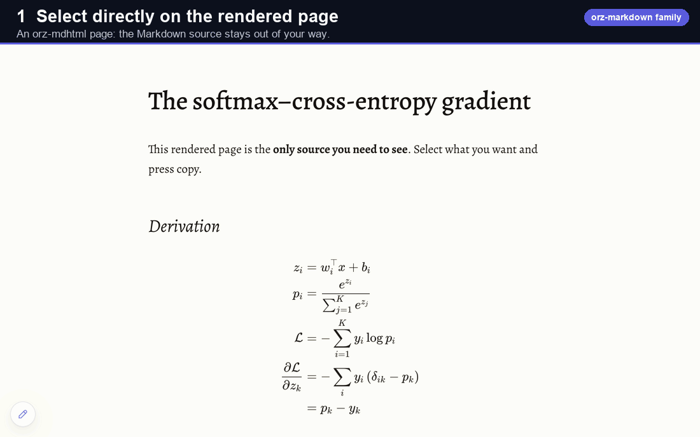

Everything below is real output
This page describes orz-markdown 2.4, the syntax every orz document uses
Each example is rendered in your browser by orz-markdown itself, right now. Source on the left, the actual result on the right. Want to play? Drop any of it into the editor.
The {{ }} plugins
One uniform syntax for rich embeds:
{{name args}} inline, or {{name⏎…⏎}} across lines. No HTML required.
{{mermaid … }}, not
```mermaid … ``` — and the same for {{chart …}}, {{smiles …}} and
{{qr …}}. There is no closing tag: every directive ends with }}.Full plugin reference
| Plugin | Example | Result |
|---|---|---|
qrcode / qr | {{qr https://orz.how}} | inline QR (scannable, click to enlarge; full size when alone in its paragraph) |
youtube / yt | {{yt dQw4w9WgXcQ}} | a responsive video embed (an id or a YouTube URL; ?t=42 sets the start); prints as its address |
mermaid / mm | {{mm⏎graph LR⏎A-->B⏎}} | a diagram |
chart | {{chart⏎type: bar⏎…}} | bar / line / pie / doughnut / radar / polarArea charts in the theme's colours (2.4; no size or axis-title keys) |
smiles / sm | {{sm C1=CC=CC=C1}} | a chemical structure |
emoji / em | {{emoji wave}} | emoji by name |
span / sp | {{sp[red] text}} | colored / badged spans |
toc | {{toc 2,3}} | a table of contents |
attrs | # Title{{attrs[#id]}} | ids, classes, attributes |
space | {{space 4}} | inline horizontal space (rem, at most 100) |
md / markdown / md-include | {{md ./part.md}} | include another Markdown file — only when the host allows file access; URLs are resolved beforehand by prepareSources() |
nyml, yaml / yml | {{nyml⏎key: value⏎}} | invisible data for scripts and document metadata |
The ::: containers
Semantic callouts and real layout, from fenced blocks. Nest by adding colons to the outer block.
All container types
Callouts: info, success, warning, danger.
Layout: left / right / center, cols, tabs,
spoil (spoiler). Any other ::: ClassName becomes a
<div class="ClassName">, so you can style your own. Printed, every tab shows under its label.
Nesting: every level that holds another container needs more colons than what it holds — a
callout inside a column is ::::: cols › :::: col › ::: info.
::: info :::: cols 1 2 :::: tabs
…content… ::: col ::: tab One
::: … …
::: :::
:::: ::::Math with KaTeX
Inline $…$ and display $$…$$,
rendered at parse time. mhchem is bundled for chemistry. Macro definitions
(\def, \newcommand) are not supported and show as source — write the expanded TeX;
a formula over 10,000 characters also shows as source.
Diagrams & charts
Flowcharts, data charts, and chemistry, all from
plain text, drawn in the theme's colours. (These libraries load on demand, and draw only once their part
of the page is visible.) Theme colours for charts and diagrams are new in orz-markdown 2.4: they apply to pages
rendered with orz-markdown 2.4 and to orz-slides 1.0 decks, and reach .md.html and
.paged.html files when orz-mdhtml and orz-paged move to kit 2.4 (their 1.0 releases embed 2.3 and
draw charts in Chart.js's default colours).
Twelve built-in themes
Light and dark, academic to playful. A theme styles the full rendered output, including containers, math, diagrams, and print. Switch instantly in the editor.
The twelve, by name and id (the id is what a header's theme: takes):
Orchard light-neat-3 (the default for documents), Neat light-neat-1, Neat 2
light-neat-2, Academic light-academic-1, Academic 2 light-academic-2, Beige
beige-decent-1, Beige 2 beige-decent-2, Playful light-playful-1 (a ruled
notebook), Playful 2 light-playful-2 (a sketchbook), Dark Elegant dark-elegant-1, Dark
Elegant 2 dark-elegant-2, Nocturne dark-elegant-3.
Line length is the reader's choice: every theme reads at about 70 characters a line;
measure-wide gives about 90 (tables, code, dense notes) and measure-full the whole width —
in an .md.html, the header's measure: wide or full.
Markdown extras that are always on
| Write | Get |
|---|---|
Text[^1] · [^1]: The note. · ^[inline note] | footnotes, numbered in one list at the end |
- [x] done · - [ ] to do | task lists |
 | an image 400 px wide (=WxH, either side optional) |
==mark== · ++inserted++ · ~~deleted~~ · H~2~O · x^2^ | highlight, insert, strike, sub- and superscript |
https://orz.how · www.orz.how | bare addresses become links |
-- · --- · ... · "quotes" | – · — · … · “curly quotes” (write a code span for the literal text) |
 then *Figure 1.* … · **Table 1.** … then a table | captions: a figure's after it, after a blank line (without one it joins the image's paragraph); a table's before it (a convention; Markdown has no caption syntax) |
Chinese and English, side by side
Emphasis works next to CJK punctuation
(**注意：**请先阅读), a line wrap between Chinese characters adds no space, and a bare URL next to
Chinese links only the URL (访问https://orz.how获取). Chinese written onto a URL path stays in the
link, so put a space or punctuation after a URL that prose follows.
Copy as Markdown
With the browser runtime loaded, selecting rendered content and copying puts Markdown source on your clipboard, not HTML.
It round-trips
Tables, lists, math, code, and even generated constructs survive the trip. Copy a rendered QR and you get
{{qr …}} back; copy a diagram and you get its {{mermaid …}} source.
Why it matters
Your rendered document stays the source of truth. Paste into any editor, chat, or issue and it is clean, portable Markdown again, ready to re-render anywhere.
